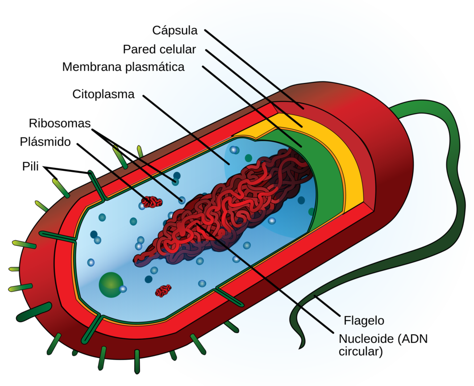

Las bacterias son organismos unicelulares en casi todos los casos, aunque algunos son de vida libre y solo
otras son parásitos. La mayoria miden entre 1-6 micras, aunque algunas especies especificas pueden llegar a
medir hasta 40 o 50 micras.
La estructura de las becterias está conformada por diversos componentes, solamente la membrana
citoplasmática, el citoplasma y el núcleo son vitales para las células. Otras estructuras como la cápsula,
flagelos, pilis y esporas, son producidas solo por algunas especies.
La pared celular es la estructura rígida que le da forma a la bacteria, la protege de efectos mecánicos y es
el sostén de la membrana citoplasmatica. Esta última es una delgada película formada por dos capas de
lipoproteínas, es la barrera osmótica de la célula, el sitio de sistemas enzimáticos, de síntesis de
proteínas, de transporte de nutrientes hacia el interior y desechos al exterior.

Las bacterias se clasifican por diversos criterios los cuales son:
| Criterio | Categorías | Ejemplo |
| Forma | Cocos(Esféricas) | Streptococcus pyogenes |
| Bacilos(Bastón) | Escherichia coli | |
| Espirilos(En espiral) | Helicobacter pylori | |
| Vibrio(Curvas) | Vibrio cholerae | |
| Agrupación | Diplococos(Pares) | Neisseria gonprrheae |
| Estreptococos(cadenas) | Streptococcus pneumaine | |
| Estafilococos(Racimos) | Staphylococcus aureus | |
| Tinción de Gram | Gram-negativos(Pared celular delgada) | Salmonella enterica |
| Grampositivos(Pared celular gruesa) | Bacillus subtilis | |
| Metabolismo | Aerobias(Requieren oxígeno) | Mycobacterium tuberculosis |
| Facultativas | Escherichia coli | |
| Nutrición | Autótrofas | Cyanobacteria |
| Heterótrofas | Lactobacillus acidophilus | |
| Esporulación | Formadoras de esporas | Bacillus anthracis |
| No formadas por esporas | Escherichia coli | |
| Patogenicidad | Patógenas(Causan enfermedades) | Treponema pallidum |
| Oportunistas(Causan infecciones) | Pseudomonas aeruginosa | |
| No patógenas | Lactobacillus casei |
Si gustas saber mas a fondo sobre las bacterias, puedes visitar el siguiente video:
Puedes conocer información ademas de la presente por aqui en el sitio:
Bacterias